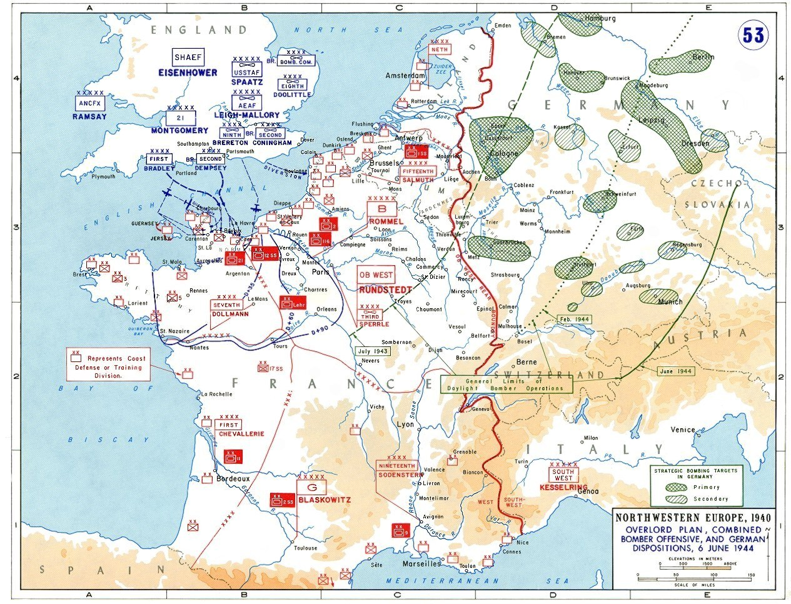

Operación Overlord
El desembarco de Normandía (Día D) y la campaña que abrió el segundo frente en Europa occidental: la mayor operación anfibia de la historia.
Datos
| Fechas | 6 de junio de 1944 (Día D) – 30 de agosto de 1944 |
|---|---|
| Lugar | Normandía, Francia |
| Resultado | Victoria aliada decisiva; comienzo de la liberación de Francia |
| Bando aliado | Estados Unidos, Reino Unido, Canadá, con fuerzas francesas y polacas |
| Bando alemán | Alemania |
| Comandantes | Dwight Eisenhower (mando supremo), Bernard Montgomery (fuerzas terrestres), Omar Bradley (Aliados); Gerd von Rundstedt, Erwin Rommel (Alemania) |
| Clave | Cinco playas: Utah, Omaha, Gold, Juno y Sword |
Bando aliado
Bando alemán
Muro Atlántico
Introducción
Durante años, la Unión Soviética había reclamado un segundo frente en Europa occidental. El 6 de junio de 1944, los aliados occidentales lo abrieron con un desembarco masivo en las playas de Normandía. Fue una operación de una escala sin precedentes: miles de barcos, decenas de miles de soldados y una compleja preparación aérea, naval y de engaño.
Razones
- Abrir el segundo frente: obligar a Alemania a combatir simultáneamente en el este y en el oeste.
- Liberar Europa occidental: establecer una cabeza de puente desde la que avanzar hacia Alemania.
- Aprovechar la superioridad aliada: el dominio del aire y del mar hacía por fin viable una invasión anfibia.
Cuerpo (desarrollo)
La invasión fue precedida por una gran operación de engaño (Fortitude) que convenció a Alemania de que el desembarco principal sería en Paso de Calais. En la madrugada del 6 de junio, tropas aerotransportadas saltaron tras las líneas para asegurar flancos y puentes, y al amanecer las tropas desembarcaron en cinco playas.
La resistencia varió: en Omaha las tropas estadounidenses sufrieron numerosas bajas frente a defensas intactas, mientras otras playas se aseguraron con menos dificultad. Los aliados consolidaron la cabeza de puente y desembarcaron enormes cantidades de hombres y material a través de los puertos artificiales Mulberry. Tras semanas de dura lucha en el bocage normando, la Operación Cobra rompió el frente y desató el avance que liberaría París a finales de agosto.

Mapa del plan de Overlord (Wikimedia Commons): las zonas de desembarco y las disposiciones alemanas el 6 de junio de 1944. Leyenda original en inglés.
Conclusión
El éxito de Overlord abrió de forma definitiva el frente occidental y aceleró el final de la guerra en Europa.
- Francia comenzó a ser liberada; París cayó en manos aliadas el 25 de agosto de 1944.
- Alemania quedó atrapada entre el avance soviético por el este y el aliado por el oeste.
- La operación demostró la abrumadora superioridad industrial y logística aliada.
Curiosidades
- Los puertos Mulberry: los aliados remolcaron puertos artificiales prefabricados a través del Canal para descargar sin necesidad de capturar un puerto.
- El engaño Fortitude: incluyó ejércitos ficticios, tanques hinchables y radiotráfico falso para despistar a los alemanes.
- Rommel ausente: el mariscal responsable de la defensa estaba en Alemania el Día D, celebrando el cumpleaños de su esposa.
Teorías
Debates e interpretaciones historiográficas, presentados como tales:
- ¿Y si hubiera fracasado? Eisenhower llevaba preparado un comunicado asumiendo la responsabilidad de un fracaso; se debate cuán cerca estuvo el desembarco de no consolidarse, sobre todo en Omaha.
- El ritmo del avance: se discute si Montgomery fue demasiado cauto en la toma de Caen, o si fijó deliberadamente a los blindados alemanes para facilitar la ruptura estadounidense.